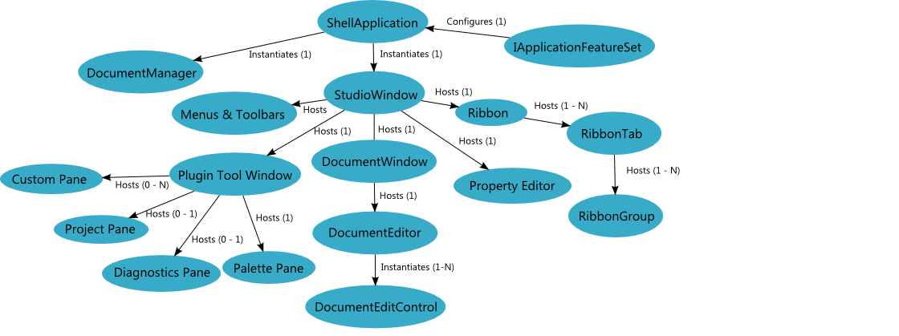
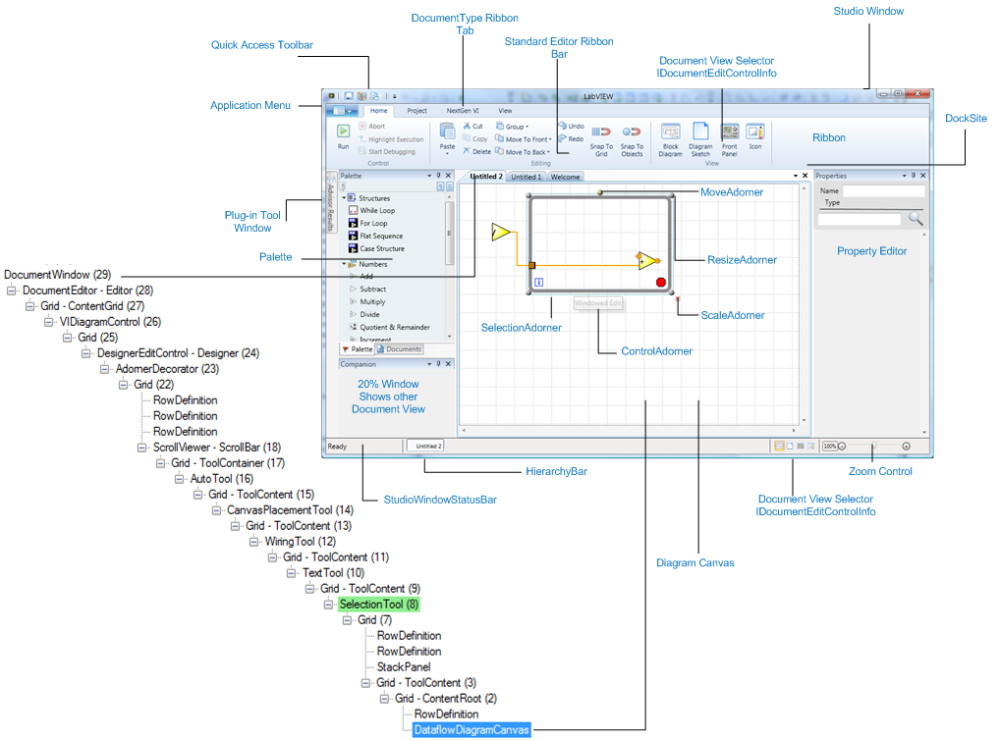
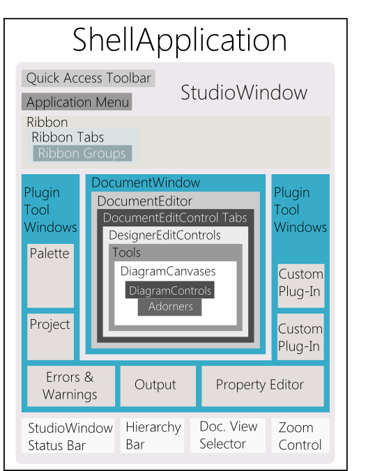

The Shell
The Shell serves as the foundation of your application's graphical user interface and manages relationships between projects, documents, and user interface elements.
Shell Architecture
The following diagram illustrates the high-level architecture of the Shell.

Shell Theory of Operation
The Shell is the foundation of the Diagram SDK's graphical user interface infrastructure. It is designed to serve as an extensible, user-friendly basis for your application's graphical user interface. The Shell provides both a rich, configurable application window full of built-in features and a powerful set of controls and a robust set of APIs upon which to build your own custom GUI.
Built-In ShellApplication Features
ShellApplication base type to serve as the basis for your main application window. When you start developing your application, your will begin by inheriting from ShellApplication, which provides basic features such as:
- StudioWindow
- DocumentManager
- Quick Access Toolbar
- Application Menu
- Ribbon
- DocumentWindow
- Plug-in Tool Window
- Property Editor
- StudioWindow Status Bar
- Hierarchy Bar
- Document View Selector
- Zoom Control
ShellApplication Visual Tree Hierarchy
The following diagram shows the Shell components in context and illustrates how the Shell's visual tree hierarchy maps to the visuals you see in the StudioWindowStudioWindowRef, from DocumentWindow down to DiagramCanvas. Note that some of the types in the visual tree hierarchy are invisible.

Abstract Structure of the ShellApplication
The following diagram presents a simplified, abstract view that highlights how the Shell's primary components fit together.

Primary Shell API Types
The following classes form the backbone of the Shell API. However, these types represent only a only a small fraction of the full API. For more information about the Shell API, see the NationalInstruments.Shell namespace documentation. For more information about the Shell View Controls, see the NationalInstruments.ShellControls namespace documentation.
ShellApplication
The ShellApplication is a base type from which you can derive your own application. ShellApplication instantiates a StudioWindow to host the application's graphical user interface.
StudioWindow
The StudioWindow is the root visual object of the Shell. The StudioWindow is a Window on WPF and a UserControl on Silverlight. The StudioWindow creates the StudioWindowEditSite and implements the functionality that it provides.
DocumentManager
The DocumentManager tracks open Documents. A Document encapsulates a Model and provides commands and a DocumentEditControl to manipulate the model.
Ribbon
The Ribbon is the swath of GUI Controls that occupies the top section of the StudioWindow. The Ribbon is the primary means of exposing configuration options and commands for the ShellApplication, Document, and RootDiagram.
RibbonTab
A RibbonTab is a collection of RibbonGroups that displays as a selectable tab in the Ribbon.
RibbonGroup
The RibbonGroup class allows you to define a collection of Ribbon controls to add to a RibbonTab.
IPushRibbonContent
IPushRibbonContent is an interface you can implement to provide custom RibbonGroups and Commands to the default RibbonTabs.
IApplicationFeatureSet
IApplicationFeatureSet is an interface you can implement to customize your ShellApplication.